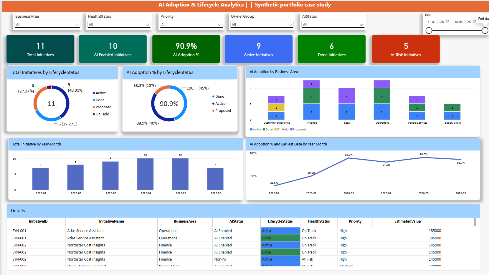

POWER BI • DAX • SNAPSHOT ANALYTICS
AI Adoption & Lifecycle Analytics
An independent Power BI case study using synthetic data to track AI adoption, initiative lifecycle, health status, and changes between monthly snapshots.
This project uses fictional data created for portfolio demonstration. It does not contain employer data or internal dashboard content.
Dashboard preview
This page will show the Executive Overview built from the synthetic project dataset.

Problem
Teams need a clear way to understand adoption levels, lifecycle progress, health status, and how initiatives change between monthly reporting snapshots.
Approach
- Created an independent synthetic dataset with monthly snapshots.
- Designed a Power BI model around snapshot facts and a date table.
- Built measures for initiative counts, AI adoption, lifecycle, and health.
- Planned snapshot comparisons for additions and status changes.
Tools and concepts
Power BI Desktop • Power Query • DAX • Data modelling • Snapshot analytics • GitHub
Project status
The Executive Overview is in progress. Change Analysis and Initiative Detail pages will be added as they are completed.